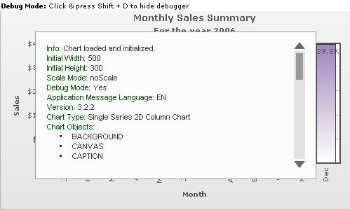
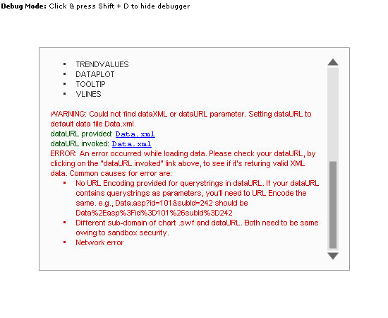
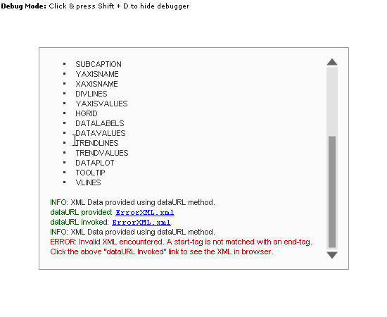
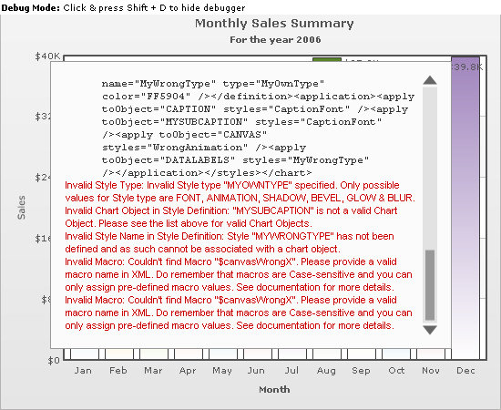

| Debug Mode (Window) |
Each Flash chart in FusionCharts XT provides a debug mode or debug window. It helps you look into what is happening behind the chart scenes. It also lists out any errors, if present. You can use the debug window to troubleshoot all your charts. The debug window lists errors like:
In each FusionCharts XT chart, you can activate the debug mode by just enabling the debug flag. A typical debug window for a chart that rendered successfully using Data URL method looks as under: |
|  |
Here, you can see a Column 2D Chart with its Debug Window. The Debug Window contains a lot of information about the chart. The contents of the above debug window can be listed as under: |
|
Info: Chart loaded and initialized.
Initial Width: 500 Initial Height: 300 Scale Mode: noScale Debug Mode: Yes Application Message Language: EN Version: 3.2.2 Chart Type: Single Series 2D Column Chart Chart Objects:
INFO: XML Data provided using dataURL method. <chart caption="Monthly Sales Summary" subcaption="For the year 2006" xAxisName="Month" yAxisName="Sales" numberPrefix="$"> <set label="Jan" value="17400" /> <set label="Feb" value="19800" /> <set label="Mar" value="21800" /> <set label="Apr" value="23800" /> <set label="May" value="29600" /> <set label="Jun" value="27600" /> <set label="Jul" value="31800" /> <set label="Aug" value="39700" /> <set label="Sep" value="37800" /> <set label="Oct" value="21900" /> <set label="Nov" value="32900" /> <set label="Dec" value="39800" /> </chart> |
From the above Debug Window, you can get the following information:
While in Debug Mode, in order to hide the debug window and see the chart below, you can click inside the respective chart and then press Shift + D. To toggle back to the Debug Mode, you will have to press Shift + D again. |
| Enabling the debug Mode |
|
To enable the debug mode for any of your charts, you just need to set the debugMode flag to 1. If you are using FusionCharts JavaScript Class, you can set the debugMode flag to 1 as under: |
<div id="chartdiv" align="center">The chart will appear within this DIV. This text will be replaced by the chart.</div>
<script type="text/javascript"><!--
var myChart = new FusionCharts("../FusionCharts/Column2D.swf", "myChartId", "600", "300", "1", "1");
myChart.setXMLUrl("Data.xml");
myChart.render("chartdiv");
// -->
</script>
|
The parameter after chart width and height is the debugMode flag. Set it to 1, and run the chart. You will now see it with Debug Window, positioned over the chart. It is recommended to use the debug window when building the chart for the first time. Once the chart runs fine, set the flag back to 0, so that your end users just see the chart and not the debug window. Note: Debug Mode error will not help you solve problems relating to path of SWF file, as the debug mode is a module inside the chart SWF file. So, unless the SWF file path is correct, you cannot switch debug mode on. If you are using direct HTML embedding mode, you can provide it as under: <object classid="clsid:d27cdb6e-ae6d-11cf-96b8-444553540000" codebase="http://fpdownload.macromedia.com/pub/shockwave/cabs/flash/swflash.cab#version=8,0,0,0"
width="500" height="300" id="Column2D" >
<param name="movie" value="../FusionCharts/Column2D.swf"/>
<param name="FlashVars" value="&dataURL=Data.xml&debugMode=1">
<param name="quality" value="high"/>
<embed src="../FusionCharts/Column2D.swf" flashVars="&dataURL=Data.xml&debugMode=1"
quality="high" width="500" height="300" name="Column2D"
type="application/x-shockwave-flash" pluginspage="http://www.macromedia.com/go/getflashplayer" />
</object>
Shown below are a few example errors shown in debug mode: |
| Data URL and Data String missing |
 |
In this chart, we have:
|
| Invalid XML Provided |
In this example, we provide invalid XML to the chart. We have intentionally not closed one of our <set> elements. The entire XML is listed below: |
<chart caption='Monthly Sales Summary' subcaption='For the year 2006' xAxisName='Month' yAxisName='Sales' numberPrefix='$'> <set label='Jan' value='17400' /> <set label='Feb' value='19800' /> <set label='Mar' value='21800' /> <set label='Apr' value='23800' > <set label='May' value='29600' /> <set label='Jun' value='27600' /> <set label='Jul' value='31800' /> <set label='Aug' value='39700' /> <set label='Sep' value='37800' /> <set label='Oct' value='21900' /> <set label='Nov' value='32900' /> <set label='Dec' value='39800' /> </chart> |
When you run your chart against this XML, you will get an "Invalid XML Data" message on the chart and the debug window will look as under: |
|  |
You can see the reason for Invalid XML data above. FusionCharts XT detects it for you and then shows the appropriate message. To get more information on error, you can click the Data URL-Invoked link and open the data source in browser. |
| Invalid STYLE definition Errors |
|
FusionCharts XT Debug Window can also capture the following errors in your Style definitions:
Let us consider the XML example below. Errors in style XML are represented in bold: |
<chart caption='Monthly Sales Summary' subcaption='For the year 2006' xAxisName='Month' yAxisName='Sales' numberPrefix='$'>
<set label='Jan' value='17400' />
<set label='Feb' value='19800' />
<set label='Mar' value='21800' />
<set label='Apr' value='23800' />
<set label='May' value='29600' />
<set label='Jun' value='27600' />
<set label='Jul' value='31800' />
<set label='Aug' value='39700' />
<set label='Sep' value='37800' />
<set label='Oct' value='21900' />
<set label='Nov' value='32900' />
<set label='Dec' value='39800' />
<styles>
<definition>
<style name='CaptionFont' type='Font' font='Verdana' size='13' />
<style name='WrongAnimation' type='Animation' param='_x' start='$canvasWrongX' duration='1'/>
<style name='MyWrongType' type='MyOwnType' color='FF5904'/>
</definition>
<application>
<apply toObject='CAPTION' styles='CaptionFont' />
<apply toObject='MYSUBCAPTION' styles='CaptionFont' />
<apply toObject='CANVAS' styles='WrongAnimation' />
<apply toObject='DATALABELS' styles='MyWrongType' />
</application>
</styles>
</chart>
|
Here, we have the following errors in style XML:
When you run a chart against this XML, you will see the following errors raised in debug mode: |
|  |
As you can see, all our errors got caught in the Debug Window and now you can use this effectively to correct your style XML. There are more errors and messages that debug window can trap, which we have not shown here. Example: When you update your chart's data at client using AJAX, all transfer messages are logged so that you easily debug into the application process. The Debug Window is aimed at making your lives simpler as developers. Next, we will see how to use the JavaScript class to troubleshoot. |